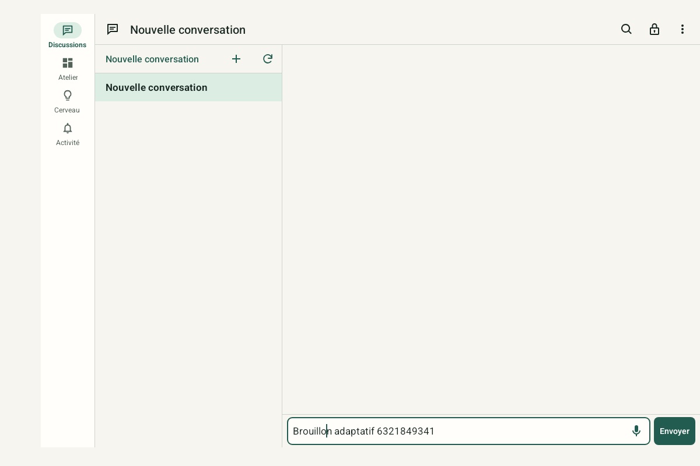
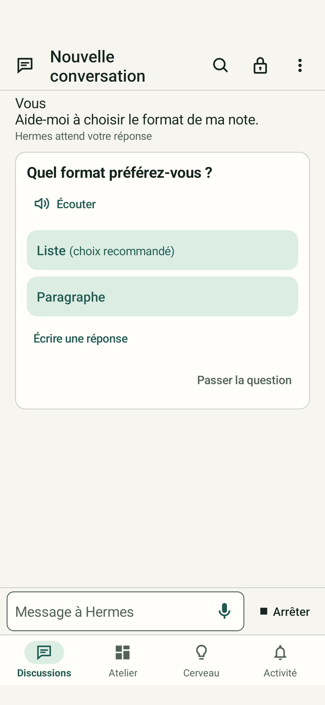
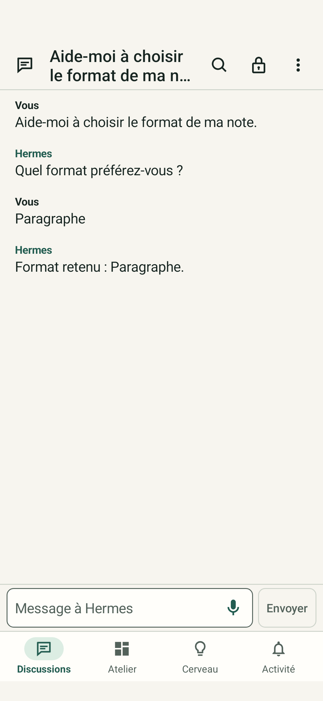
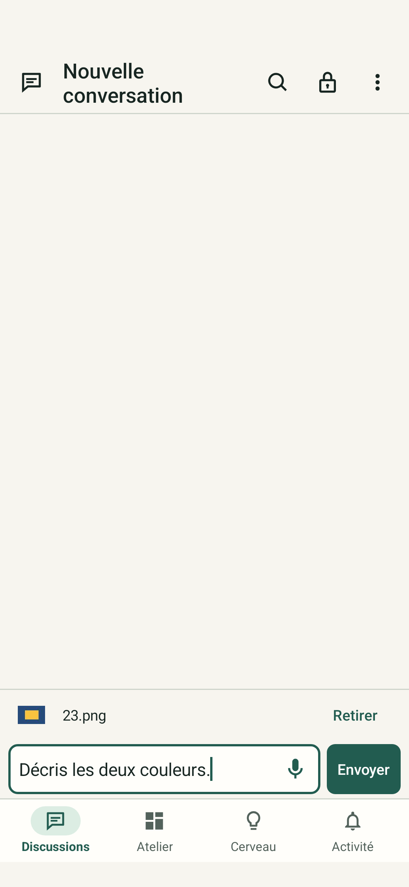
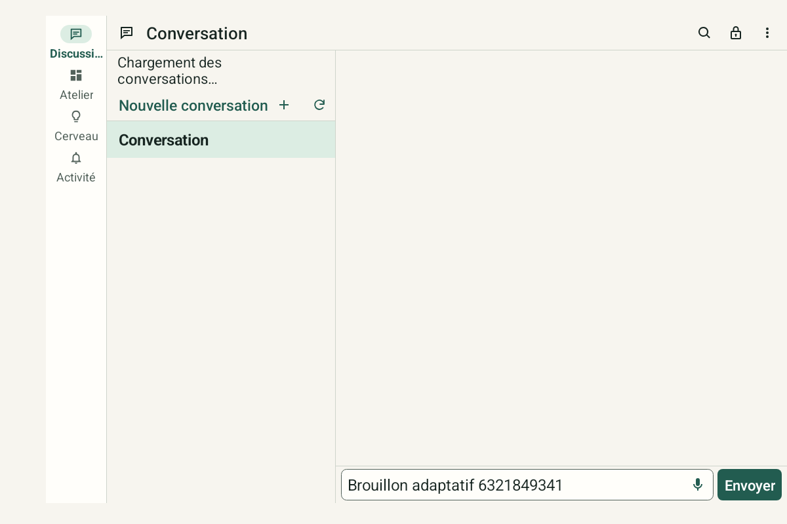

Rail latéral 92dp sans troncature, liste des fils, discussion active et outil « Relecture de code » épinglé côte à côte.
Toutes les captures ci-dessous ont été produites par nos parcours automatisés sur émulateurs Android 16 (API 36) connectés au fork réel LLM-4-People/hermes-agent (révision 0ae4511b). Cliquez sur une capture pour l’agrandir.
Rail latéral 92dp sans troncature, liste des fils, discussion active et outil « Relecture de code » épinglé côte à côte.

Navigation adaptative Discussions · Atelier · Cerveau · Activité sur rail 92dp avec brouillon actif conservé.

Choix recommandés par Hermes, bouton d’écoute hors connexion, saisie libre et barre inférieure à 4 onglets.

Demande d’autorisation ponctuelle avec divulgation dépliable (« Voir les détails ») avant toute opération sensible.

Reprise complète du fil après reconnexion et verrouillage avec reçus d’approbation vérifiables.

Aperçu miniature de l’image jointe au-dessus du champ de saisie, bouton Retirer et envoi uniquement sur action utilisateur.

Bascule paysage ↔ portrait sans recréer l’Activity ni perdre le brouillon saisi (sameComposer=true).

Mise en page stable à fontScale=1.5 : aucune superposition du champ de saisie, des boutons d’action ou de la navigation.
| Suite | Portée | Résultat vérifié |
|---|---|---|
./gradlew :app:testDebugUnitTest |
51 suites JVM (UI live, widgets, biométrie, push, Brain, voix, config) | 190 / 190 PASS |
androidTest (API 36, 3 émulateurs) |
50 classes instrumentées (partage, ambiant, push, Live UI, OS, coffres) | 145 / 145 PASS |
scripts/fast_check.py |
Docs, serveur push/nearby, déploiement multi-profils, hygiène | 27 / 27 PASS |
verification/adaptive_devices.py |
Tablette 1200×800, rotation 800×1200, grands caractères 150 % | PASS |
verification/conversation_cards.py |
6 tours clarification + approbation + voix + historique restauré | PASS |
:app:assembleRelease + lintDebug |
Build release R8 + lintVitalRelease + lintDebug | PASS (0 errors) |